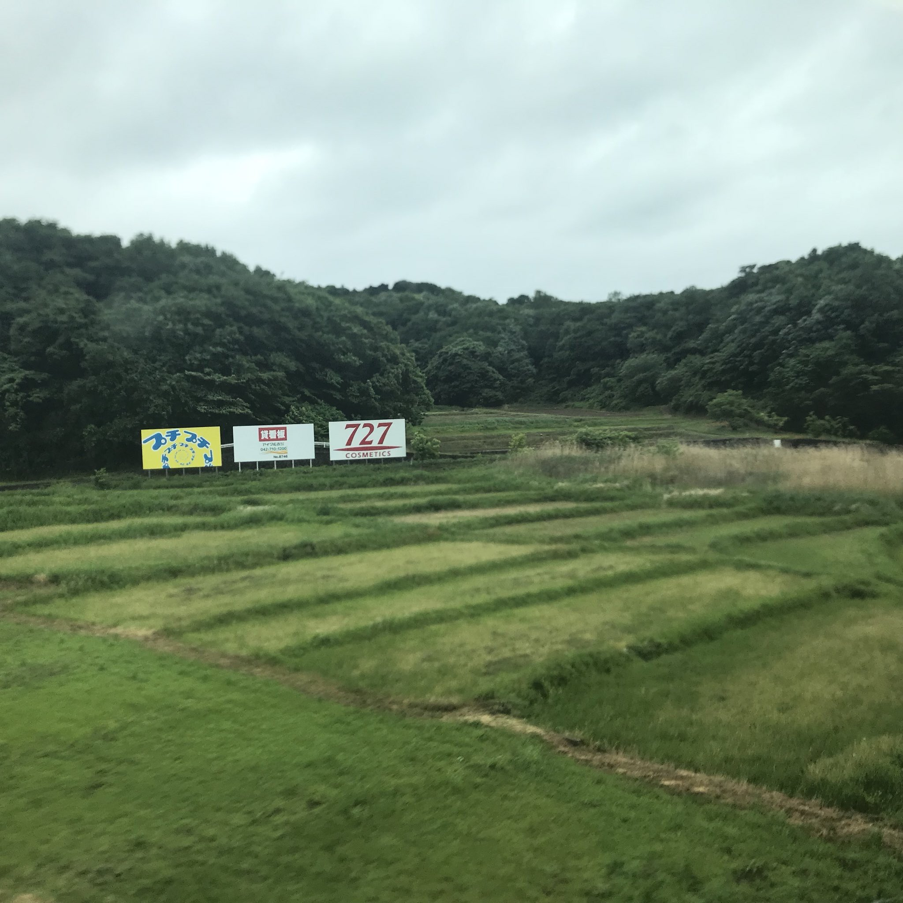

TOKAIDO SHINKANSEN WINDOW VIEW
When can you see PUTIPUTI Sign from the Shinkansen?
A mystery PUTIPUTI sign.
- Section
- Shin-Yokohama → Odawara, around Fujisawa
- Seat side
- Seat A · sea side
- Timing
- About 29 minutes after leaving Tokyo on a Nozomi train
- Photos
- 3 photos
View on map
Inline coordinates are still being tuned for this spot. You can check the location in an external map.
Open mapHow to find PUTIPUTI Sign
Between Shin-Yokohama and Odawara, a PUTIPUTI-like sign appears on the Seat A side. The trackside sign changes from time to time; as of July 2026, it had become a small mystery asking, 'Who am I?' Beside it is the familiar 727 COSMETICS sign. It is not a major landmark, but it is exactly the kind of small discovery that makes the ride feel personal. It is quick, so start watching with a little margin.
If you are traveling from Tokyo toward Shin-Osaka, start watching the Seat A · sea side window as you approach Shin-Yokohama → Odawara, around Fujisawa. If you are traveling toward Tokyo, the order is reversed.
Why this view matters
PUTIPUTI Sign is one of the window views that make the Tokaido Shinkansen more than a transfer. The train moves fast, so visibility depends on weather, seat position, and timing.
PUTIPUTI Sign in photos

